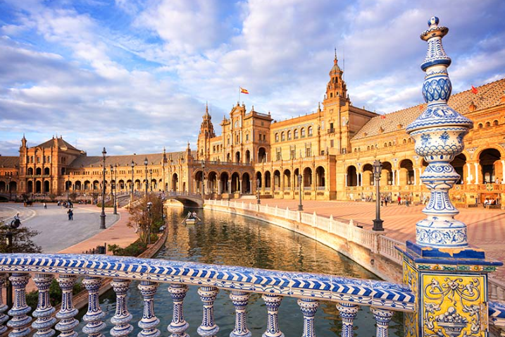

Sevilla: Arte, Flamenco y Pasión

Sevilla tiene un color especial. Es la capital de Andalucía y una de las ciudades más hermosas de España, famosa por su clima cálido, la alegría de su gente, el flamenco y un patrimonio histórico impresionante que refleja la mezcla de culturas.
Lugares mágicos que debes descubrir:
- La Giralda y la Catedral: La catedral gótica más grande del mundo y su icónico campanario de origen almohade.
- El Real Alcázar: Un conjunto de palacios espectaculares con jardines de ensueño (¡escenario de Juego de Tronos!).
- La Plaza de España: Una obra maestra de la arquitectura regionalista, abrazada por un canal donde puedes pasear en barca.
- El Barrio de Santa Cruz: La antigua judería, un laberinto de callejuelas estrechas, patios llenos de flores y plazas con encanto.
- La Torre del Oro: Situada a orillas del río Guadalquivir, un lugar perfecto para pasear al atardecer.
Disfruta de la mejor gastronomía yendo de "tapeo" por el barrio de Triana y déjate llevar por el ritmo del sur.